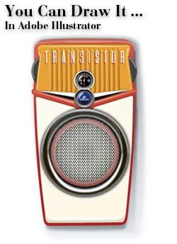
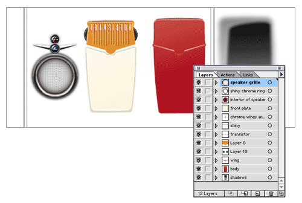
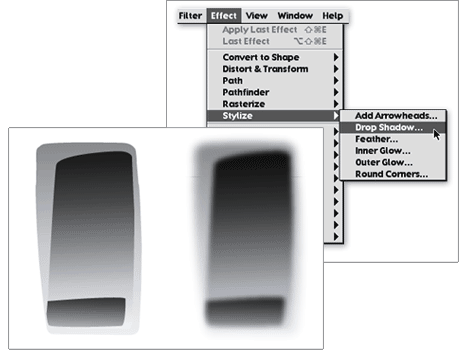
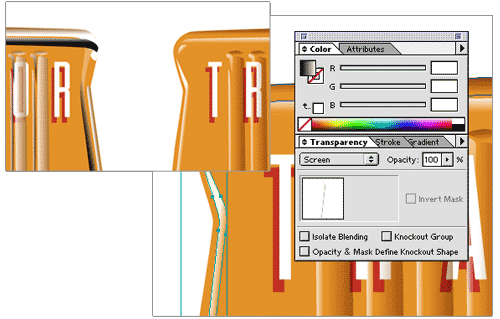

Home: Week 1 : The Illustrator Challenge

(Click to enlarge - opens in new browser window)
Yes, this was drawn entirely with Adobe Illustrator, version 9.0. Remember that I wanted to reinforce your graphic design software skills?
Your mission, should you choose to accept it, is to masterfully render an industrial object entirely with Adobe Illustrator. No Photoshop, no scans of hand drawings, and no Photoshop.
By "Industrial Object" I mean any thing made in a factory. Store bought, factory made items tend to be hard-edged and geometric in appearence (not a soft, squishy organic flower for example). These qualities will be easier to draw.
Choose your object. Photograph it with a digital camera, or slap the thing on a scanner. The photo will be your reference. Place the file into a new Illustrator document and start tracing.
Yes, this will be hard.
That's why it's called a challenge.
This is a required project. You will receive pass/fail grades for components of the project, and an evaluation of the final.
But..
That's not all.
Upon completion of the project each section of the class will vote on the best illustration. The winner will receive honor, glory, bragging rights, and 1/2 letter grade added to their final semester grade.
You will work on this project outside of class over the course of about 4 1/2 weeks. Project due dates are:
Here are some tips to help you get started.

Layers are used in Photoshop to 'stack' items from background to foreground. This can be done in Illustrator as well, except in Illustrator you can work on multiple layers at the same time, or lock individual layers to prevent them from being moved or changed while you are working.
Just like you would in a painting....work from background to foreground. Make the large, simple shapes (outlines) of an object first. Then create details and other elements on their own layers.
 By applying a "Gaussian Blur" and transparency to several objects with gradients you can make complex shadows.
There are many other effects you can try as well, like Drop Shadows, Feathered Edges, and Inner and Outer Glow. Find these effects under the "Effects" menu.

With Illustrator version 9.0 and higer, you can apply transparency and blending modes to individual objects. Like in Photoshop, you can use transparent, blended gradients to create lighting effects in your illustration.
To create a tranparent, sharp highlight, create the shape of the highlight with the pen tool. Fill the shape with a gradient of white to black. The white side of the gradient should correspond with the direction of the lighting. Set the object's layer blending mode to "Screen" and drop the opacity a little. The black will dissapear, and the white will blend into the color beneath, creating a sharp edged, reflective highlight.